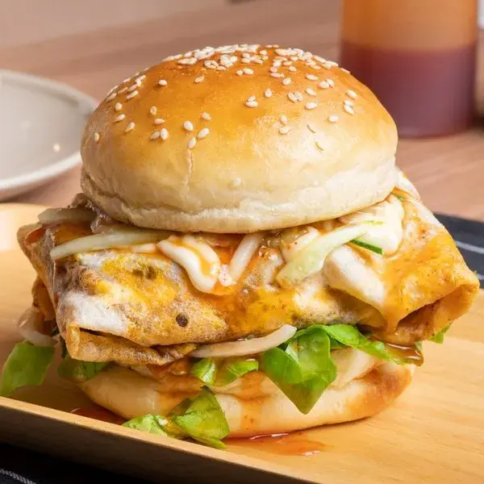

Ramly Burger Double Special
Today, we going to make malaysia favourite burger which not mcdonald but local call Ramly Burger
Ingredieants
Meat and egg
- 2 Ramly beef or chicken burger patties
- 1 to 2 large eggs (lightly beaten)
Bun and Veggies
- 1 sesame burger bun (sliced in half)
- Finely shredded cabbage or lettuce
- Thinly sliced yellow or red onions
Souces and seasonings
- Margarine (Planta) or butter
- Worcestershire sauce (kicap Lea & Perrins)
- Ground black pepper
- Mayonnaise
- Malaysian chili sauce (sos cili)
- Black pepper sauce or BBQ sauce
Instructions
- Toast the Buns: Spread margarine on the cut sides of the burger bun and toast on a hot griddle or flat pan until golden brown. Set aside.
- Cook & Season the Patties: Melt a little margarine on the pan and fry both patties. Use a spatula to press shallow slits into the patties so they cook evenly and soak up seasoning. Splash Worcestershire sauce and sprinkle black pepper over both sides while grilling, then stack the two patties together.
- Wrap in Egg ("Special"): Pour the beaten egg onto the greased pan and swirl it into a wide, thin omelette sheet. Before the egg fully sets, place the stacked patties in the center, drizzle mayonnaise and chili sauce over the meat, and fold the edges of the egg over the patties to form a neat parcel.
- Assemble:Place the egg-wrapped double patty onto the bottom bun. Pile on shredded cabbage and sliced onions, drizzle generously with mayonnaise, chili sauce, and black pepper sauce, and cap with the top bun.
back to home